简介
这是一个通用的机器学习平台，包括图像分类和目标检测两大板块。该程序将后端繁复冗长的代码进行包装，以友好的用户界面来展现，操作简单，结果展示一目了然，为用户提供优质的使用体验。
程序的框架如 图 1 所示： 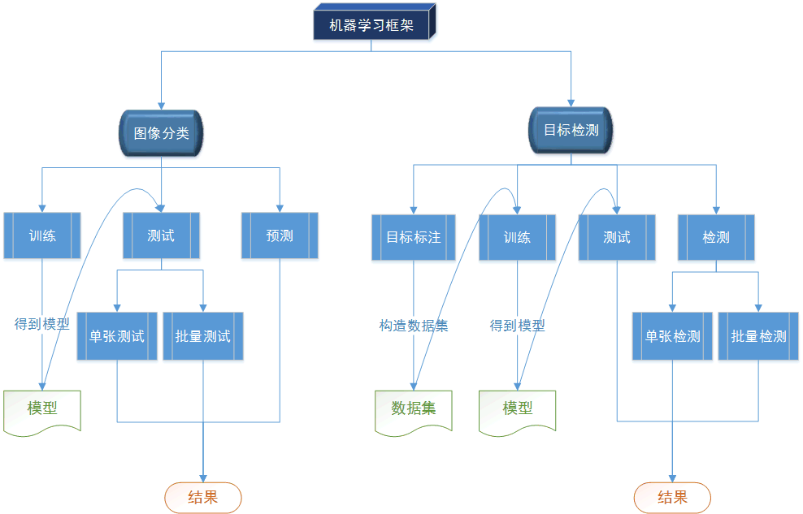
图 1 ：程序框架
图像分类
训练阶段
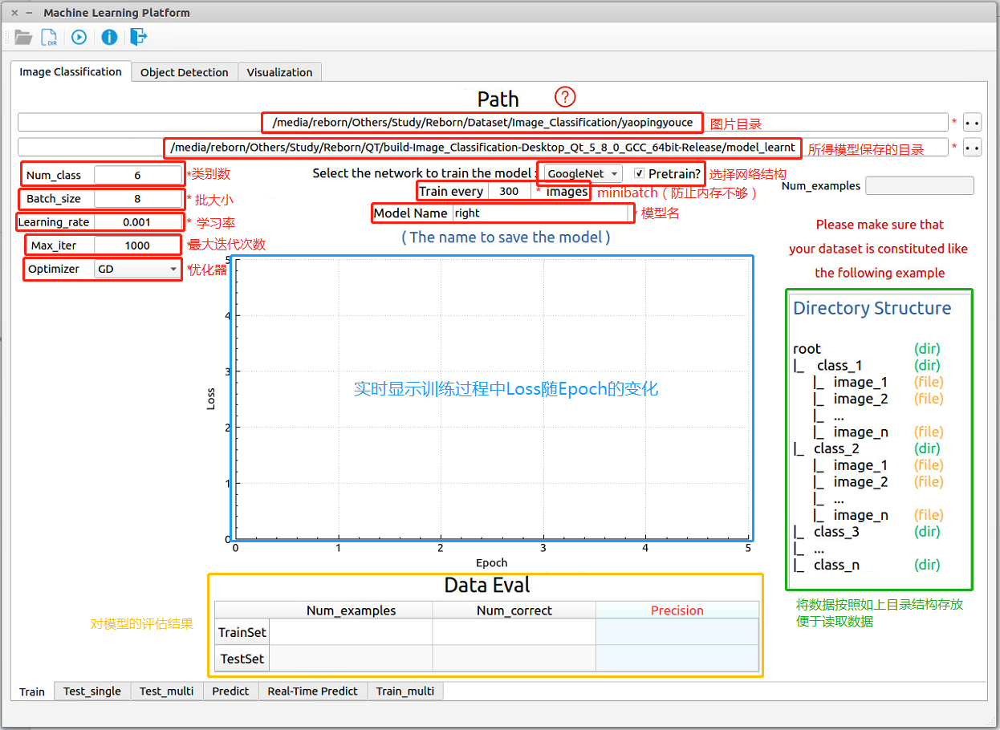图 2-1 ：图像分类——训练阶段
图像分类的训练阶段如 图 2-1 所示，各模块的名字和功能已经标示在图上。 - 训练之前，需要先将图片数据结构化，即如 图 2-1 中绿色框所示：有n个类就创建n个文件夹，每个文件夹重命名为每个类名，之后将所有图片放到对应类别的文件夹下。
- 图片目录：点击右上角的按钮选取图片目录，选择绿色框中指示的“root”文件夹即可。
- 所得模型保存的目录：点击右上角的按钮选取模型保存目录，可以随便选取。
- 选择网络结构部分，有GoogleNet和AlexNet可选择，并可读取使用ImageNet数据集预训练的权重
- minibatch：设置每次读到内存中的图片数量，防止因图片太多导致的内存溢出
- Num_class：数据集中的类别数
- Batch_size：设置每次训练的时候输入网络的图片数量
- Learning_rate：设置学习率，影响收敛速率
- Max_iter：设置最大迭代次数
- Optimizer：选择优化器（如梯度下降法GD）
上面的全部参数填写完毕后，点击程序左上角按钮进行训练。
- Loss曲线： 图 2-1 中蓝色框所示，在训练过程中可以实时监控Loss随着Epoch的变化
- Data Eval： 图 2-1 中黄色框所示，对模型的评估结果记录在这个表格中，包括训练集和测试集各自的图片总数、预测正确的图片数以及最终的准确率。
单张测试阶段
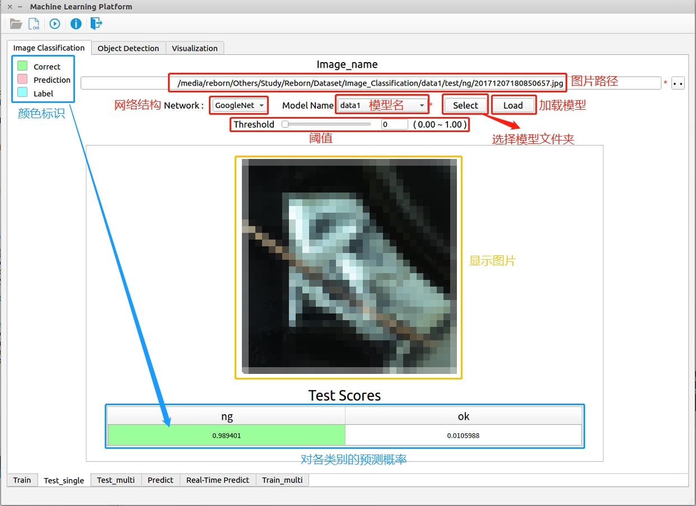图 2-2：图像分类——单张测试阶段
图像分类的单张测试阶段如 图 2-2 所示，各模块的名字和功能已经标示在图上。 - 点击右上角的按钮选择图片，之后会在左侧的文本框显示完整图片路径
- Select按钮：选择模型所在的目录，之后会在Model Name下拉框中显示读取到的所有模型名字
- Model Name下拉框：选择所要用的模型
- Load按钮：加载3）中选择的模型，读取类别信息
- Network下拉框：选择3）中模型所使用的网络结构
- Threshold：设置阈值，当预测为ok的概率低于该阈值时，强制判为ng
上面的全部参数填写完毕后，点击程序左上角按钮进行测试。
- Test Scores：显示该模型对于该图片各类别的预测概率。左上角为对于该表格的颜色标识，表格中底色为红色的表示预测值，蓝色的表示实际值，当预测值和实际值相同时，底色为绿色
批量测试阶段
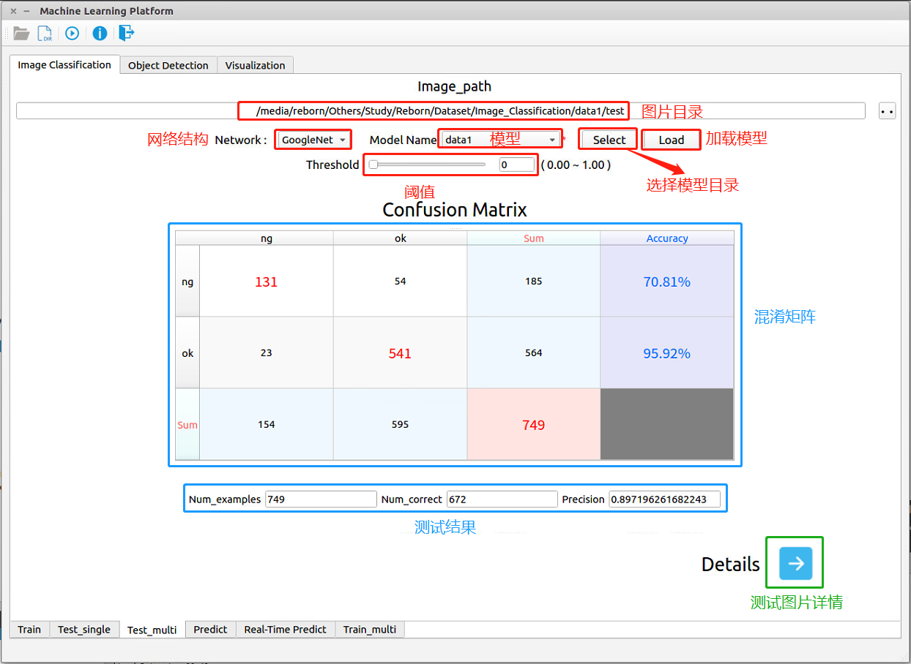图 2-3：图像分类——批量测试阶段
图像分类的批量测试阶段如上 图 2-3 所示，各模块的名字和功能已经标示在图上。 - 点击右上角的按钮选择目录，之后会在左侧的文本框显示完整图片目录
- Select按钮：选择模型所在的目录，之后会在Model Name下拉框中显示读取到的所有模型名字
- Model Name下拉框：选择所要用的模型
- Load按钮：加载3）中选择的模型，读取类别信息
- Network下拉框：选择3）中模型所使用的网络结构
- Threshold：设置阈值，当预测为ok的概率低于该阈值时，强制判为ng
上面的全部参数填写完毕后，点击程序左上角按钮进行测试。
- Confusion Matrix：混淆矩阵，用于直观显示各个类别单独的预测准确率。表格中的行表示实际类别，列表示预测类别，如第一行表示测试数据集中一共有185张ng的图片，其中131张被正确地预测为了ng，54张被错误地预测为了ok，所以对于ng这一类别的预测准确率为70.81%。
- 测试结果：对所有测试数据的测试结果，包括图片总数、预测正确的图片数、整体准确率。
- 测试图片详情：可以查看所有预测错误的图片，如 图 2-4 所示。其中红色底代表预测值，蓝色底代表实际值。该窗口的标题栏代表当前图片索引号和图片总数，可以通过左右四个按钮进行切换查看。
图 2-4：批量测试阶段——测试详情
检测阶段
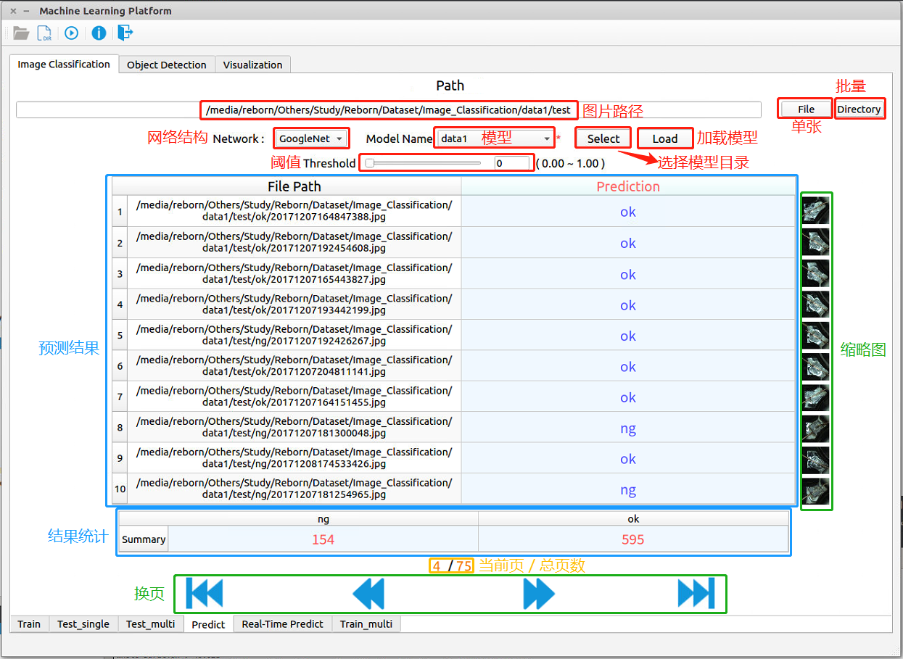图 2-5：图像分类——检测阶段
图像分类的预测阶段如 图 2-5 所示，各模块的名字和功能已经标示在图上。 - 点击右上角的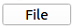按钮选择单个图片，或者点击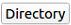按钮选择整个目录，之后会在左侧的文本框显示完整图片路径
- Select按钮：选择模型所在的目录，之后会在Model Name下拉框中显示读取到的所有模型名字
- Model Name下拉框：选择所要用的模型
- Load按钮：加载3）中选择的模型，读取类别信息
- Network下拉框：选择3）中模型所使用的网络结构
- Threshold：设置阈值，当预测为ok的概率低于该阈值时，强制判为ng
上面的全部参数填写完毕后，点击程序左上角按钮进行检测。
- 检测结果：以列表的形式呈现，每张图片对应一个预测结果，并显示每张图片的缩略图，便于查看。一次展示10张图片，可以通过下方的换页按钮进行切换
- 结果统计：统计预测结果中每一类的图片总量
目标检测
图像标注工具
图像标注工具的界面如 图 3-1 所示： 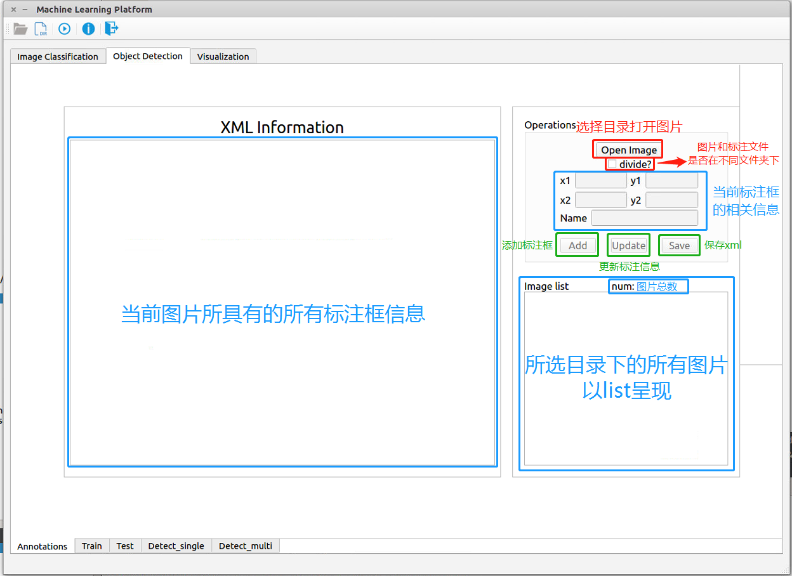图 3-1：目标检测——图像标注工具
- Open Image按钮：选择图片所在目录，之后会在下方Image list中显示图片列表下拉框中显示读取到的所有模型名字
- divide选择器：根据图片（image）和标注文件（xml）是否在同一文件夹下进行选择。
- 若原先的image和xml在同一文件夹下，则不选中，这样生成的新的xml将会保存在与image同一文件夹下
- 若原先的image和xml已经按照VOC 2007的目录格式存放，即如图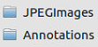所示，其中JPEGImages存放图片，Annotations存放xml文件，则需要将divide选中，这样就会自动分别读取两个文件夹下的image和xml，保存的时候也会分开存放，新的xml将会存放在Annotations文件夹中
- Image list列表：列出通过Open Image按钮所选目录中的所有图片名，并显示图片总数num。双击列表中的文件名即可新开一个窗口显示图片，并在左侧XML Information中展示该图片的标注信息，如 图 3-2 所示： 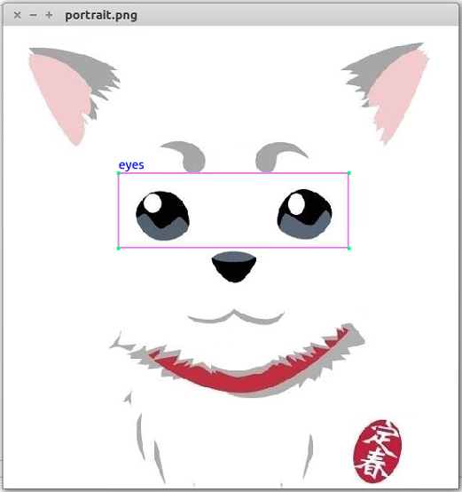
- XML Information：用于展示当前图片所具有的的所有标注框的信息，如 图 3-3 所示，包括标注框的名字以及位置坐标，比如这张图现在只有一个框，名字叫eyes，框的左上角坐标为（159,195），框的右下角坐标为（475,294）。
鼠标右击XML Information中标注框的名字，会弹出删除选项，如 图 3-4 所示：
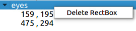
- Delete RectBox：删除当前标注框信息，同时也会删除图3-8中的标注框
- Add按钮：在 图 3-2 上画完新的标注框后，点击Add按钮即可添加，同时刷新左侧XML Information列表
- Update按钮：在 图 3-2 上编辑完原有的标注框后，点击Update按钮即可进行更新，同时刷新左侧XML Information列表
- Save按钮：将当前的所有标注信息保存为VOC 2007的标准xml格式，保存位置由之前的divide选择器进行控制。
- 关于修改标注框，我们可以直接在图片上拖动来进行修改：如 图 3-5 所示，当鼠标靠近标注框的某个顶点时，会将当前标注框高亮显示，即图上的eyes标注框，四个顶点红色高亮，且鼠标所在顶点变为正方形，表示可以拖动，同时， 图 3-5 中右侧红框内也会自动加载当前标注框的信息，可以直接修改里面内容。 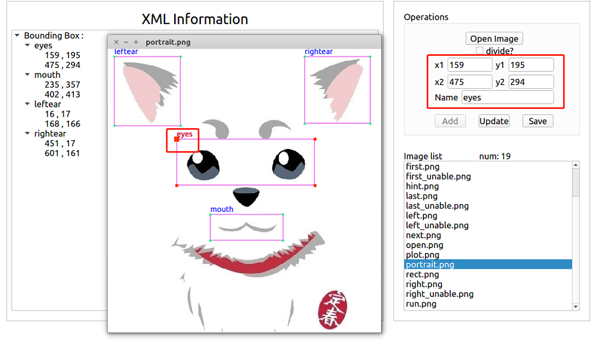
图 3-2
如果原先就有对应这张图片的xml标注文件，则会自动读取并绘制在原图上，如 图 3-2 所示的eyes这个标注框
此时标注工具主界面如下所示：
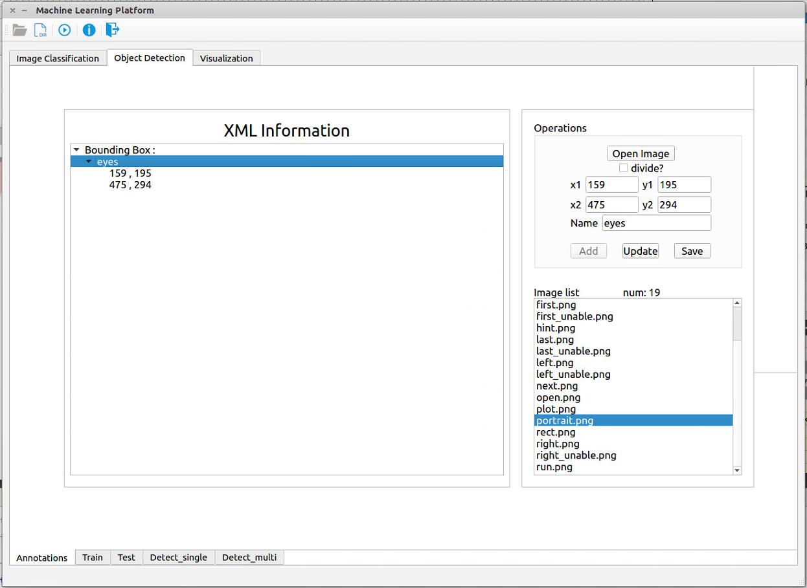图 3-3：标注工具主界面
图 3-4：标注框删除选项
图 3-5：修改标注框
当我们修改完标注框后，点击Update按钮进行更新即可，最后若要保存的话，点击Save按钮即可。
我们稍微修改了一下，点击Update按钮后效果如 图 3-6 ：
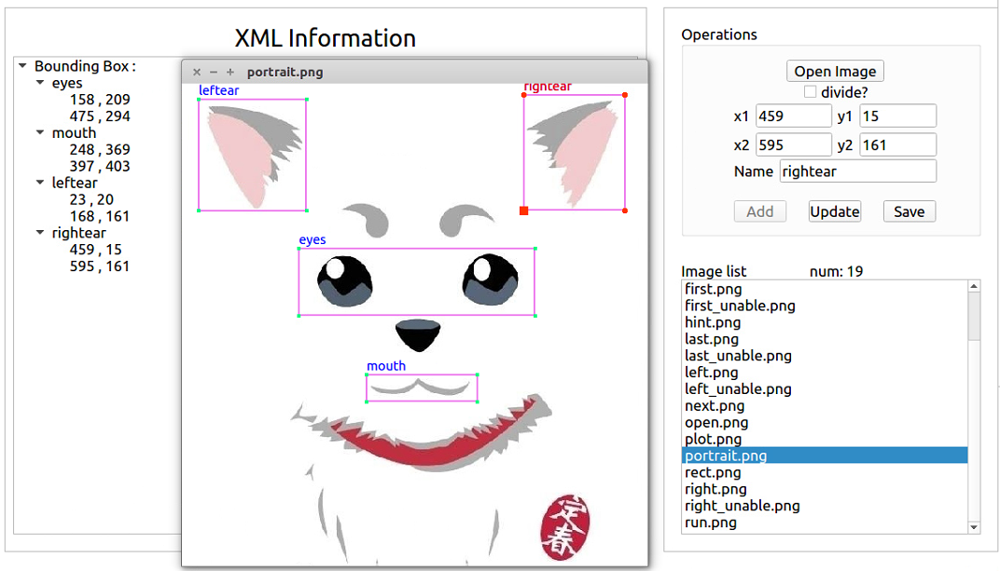图 3-6：修改后的效果
训练阶段
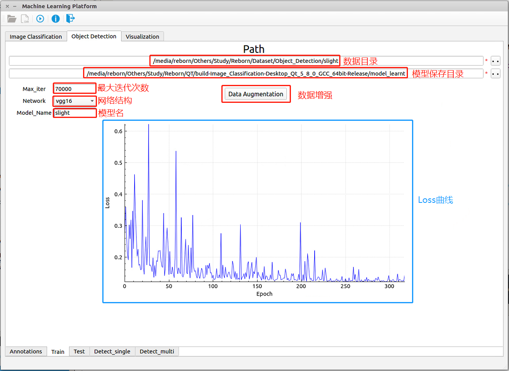图 3-7：目标检测——训练阶段
目标检测的训练阶段如 图 3-7 所示，各模块的名字和功能已经标示在图上。 - 数据目录：选择数据所在目录，图片和标注文件可以放在同一个根目录下，会自动通过divide_dataset_into_images_and_xmls.py和make_VOC_dataset.py这两个python脚本将数据集整理成VOC 2007的标准目录格式，便于读取数据进行训练
- 模型保存目录：选择模型所要保存的位置
- Max_iter：最大迭代次数
- Network下拉框：网络结构，包括vgg16和res101
- Model_Name：模型名
- Data Augmentation按钮：数据增强，包括旋转90°、180°、270°、水平对称、更亮、更暗这六种形式的增强
上面的全部参数填写完毕后，点击程序左上角按钮进行训练。
- Loss曲线： 图 3-7 中蓝色框所示，在训练过程中可以实时监控Loss随着Epoch的变化关系
测试阶段
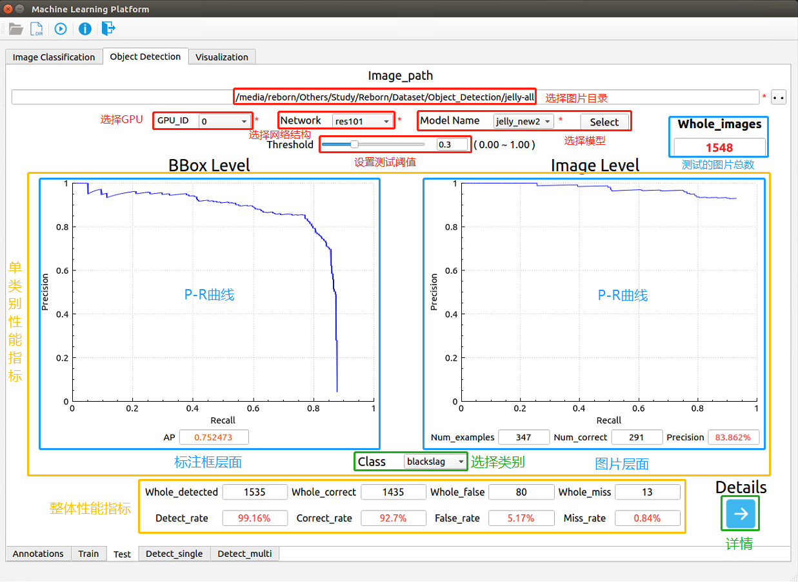图 3-8：目标检测——测试阶段
目标检测的测试阶段如 图 3-8 所示，各模块的名字和功能已经标示在图上。 - 选择图片目录：选择数据所在目录，即VOC 2007标准目录格式的根目录
- Select：选择模型所在目录，会自动识别该目录下所有符合条件的模型，并在左侧Model Name下拉框中显示
- GPU_ID下拉框：选择测试所使用的GPU
- Model_Name下拉框：从识别出的模型中选择一个
- Network下拉框：选择Model Name中所选模型使用的网络结构
- Threshold滑动条：选择测试所使用的阈值
上面的全部参数填写完毕后，点击程序左上角按钮进行测试。
- 单类别性能指标：
- Class下拉框：用于选择类别，即标注框的名字，之后会在 图 3-8 蓝色框所在位置显示对于该类别的测试结果
- BBox Level：标注框层面，即目标检测的测试指标，以PR曲线呈现，最终用平均准确率AP表示对于该类标注框的测试结果。如对于blackslag，PR曲线中纵轴表示Precision（查准率），即从所有测试集的所有标注框中检测出stain标注框的概率，横轴表示Recall（查全率），即从所有测试集的所有类名为stain的标注框中检测出stain标注框的比率，PR曲线下的面积即为AP。
- Image Level：图片层面，即图像分类的测试指标，包括含有该类别的图片总数，检测出该类别的图片数，以及对于该类别的准确率。如对于blackslag，在所有测试集中有223张图片包含了stain的标注框，其中检测出了214张，准确率为96%。
- 整体性能指标：
- Whole_images：本次用于测试的所有图片数
- Whole_detected：测试集中检测出目标的图片数
- Detect_rate：测试集检测率
- Whole_correct：测试集中检测正确的图片数
- Correct_rate：测试集正确率
- Whole_false：测试集中过检的图片数
- False_rate：测试集过检率
- Whole_miss：测试集中漏检的图片数
- Miss_rate：测试集漏检率
- 标注框层面： 对每一种类别的标注框进行统计，计算出各类别标注框的正确率、错误率和漏检率，最后一行是对所有标注框的整体的性能指标。
- 行：共21行，前20行为类别名，最后一行Sum表示整体性能指标。
- 列：共27列，前20列为类别名，21列Sum表示属于该行类别的标注框的总数，22列Correct_Num表示在所有该类别的标注框中预测正确的个数，23列Correct_Rate表示该类别标注框预测的正确率，24列Miss_Num表示在所有该类别的标注框中漏检的个数，25列Miss_Rate表示该类别标注框的漏检率，26列False_Num表示在所有该类别的标注框中预测错误的个数，27列False_Rate表示该类别标注框的错检率。
- 图片层面： 对每一张图片进行统计，计算出包含不同类别标注框的图片的个数以及各项性能指标，最后一行是对所有图片整体的性能指标。
- 行：共21行，前20行为类别名，最后一行Sum表示图片整体性能指标。
- 列：共5列，第1列Sum表示包含该行类别标注框的图片总数，第2列Correct_Num表示在所有包含该类别标注框的图片中检测出该类别目标的个数，第3列Correct_Rate表示包含该类别标注框的图片的检测正确率，第4列Detected_Num表示在所有包含该类别标注框的图片中检测出目标的个数，第5列Detected_Rate表示包含该类别标注框的图片的检测率。
点击右下角按钮后即可查看测试的详细结果，包括标注框层面的Confusion Matrix，以及图片层面的对应每种类别的性能指标，如 图 3-9 ：
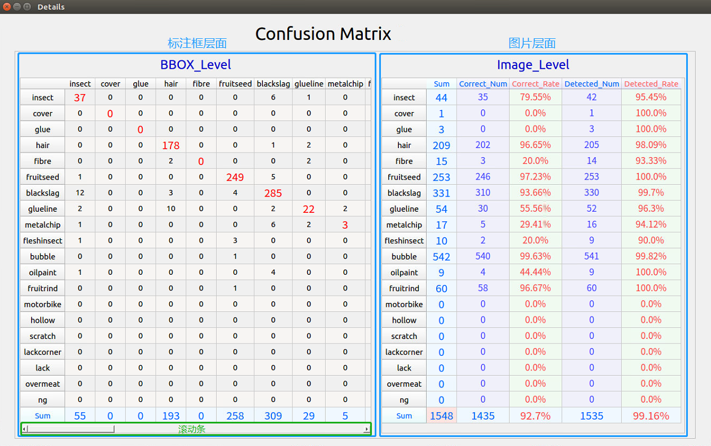
图 3-9：目标检测——测试结果
检测阶段
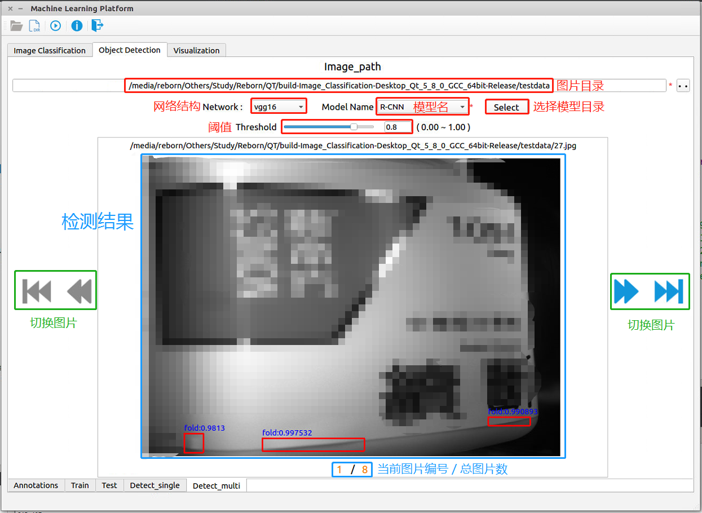图 3-10：目标检测——检测阶段
目标检测的检测阶段如 图 3-10 所示，各模块的名字和功能已经标示在图上。 - 图片目录：选择待检测的图片目录
- Select：选择模型所在目录，会自动识别该目录下所有符合条件的模型，并在左侧Model_Name下拉框中显示
- Model_Name下拉框：从识别出的模型中选择一个
- Network下拉框：选择Model_Name中所选模型使用的网络结构
- Threshold：阈值，当检测框的置信度低于该阈值时，不予考虑
上面的全部参数填写完毕后，点击程序左上角按钮进行检测。
- 检测结果：在原图像上将所有检测出来的置信度高于阈值的矩形框画出来，并标上名字和置信度。可以通过 图 3-10 绿色框中的四个按钮切换图片。下方显示当前图片编号以及图片总数